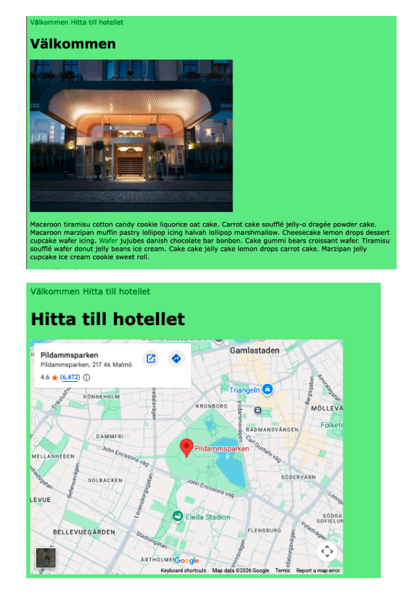
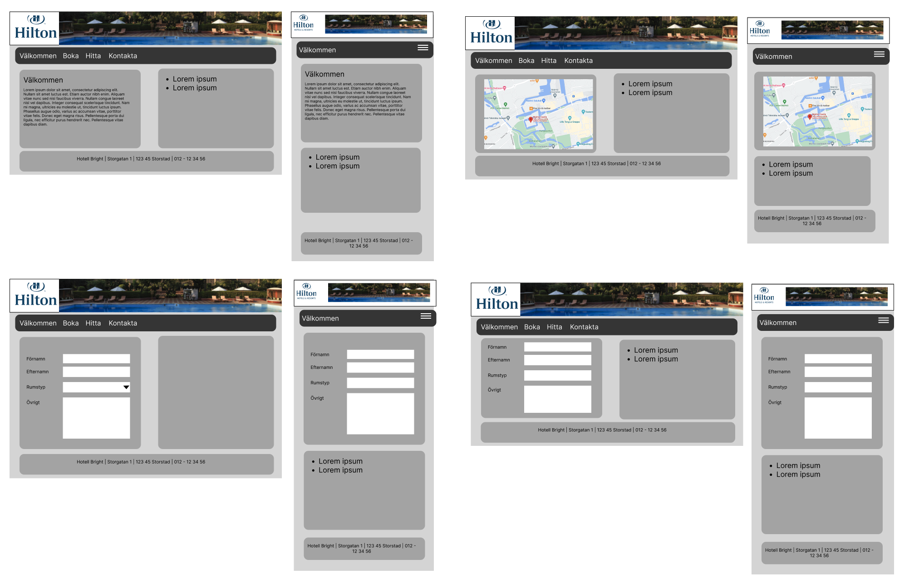

Inlämningar
Inlämning 1 - Figma
Planera hotellwebbplatsen som wireframes innan du börjar koda.
Uppgift
Du ska skapa wireframes för en fiktiv hotellwebbplats i Figma. Wireframes är enkla skisser som visar sidans struktur: rubriker, meny, bilder, innehållsområden och footer.
Den här inlämningen hör ihop med Inlämning 2 - Hotellwebbplatsen. Det du planerar här ska hjälpa dig när du senare bygger webbplatsen med HTML och CSS.
Viktigt om Figma
Alla sidor ska ligga i samma Figma-fil och på samma Figma Page. Skapa alltså inte en separat Figma-fil för varje sida. Lägg i stället alla frames bredvid varandra så det går att se hela webbplatsens planering på ett ställe.
Namnge dina frames tydligt, till exempel Desktop index, Mobil index, Desktop hitta och Mobil hitta.
Det du ska lämna in
- En delad Figma-länk som läraren kan öppna.
- Wireframes som visar sidorna du ska bygga.
- Frames som är tydligt namngivna.
- En kort kommentar om du satsar på E-nivå eller C/A-nivå.
Filmgenomgångar
Filmserie: så används Figma i uppgiften.
Observera att du ska göra uppgiften i en enda Figma-fil och på en enda Figma Page, även om filmerna visar två eller åtta olika Pages. Skapa alltså inte en separat Figma-fil för varje sida. Lägg i stället alla frames bredvid varandra så det går att se hela webbplatsens planering på ett ställe.
Glöm inte att öppna rättigheterna innan du lämnar in, så att din lärare kan se din Figma. Se instruktionen längre ner på sidan för hur det kan se ut.
E-krav
För E ska du göra två desktop-wireframes i Figma:
- Index: startsidan för hotellet.
- Hitta: en sida där besökaren kan se var hotellet ligger.
Dela din Figma med din lärare.
Du får inte använda
- Samma bilder som i exemplet.
- Samma logotyp som i exemplet.
- Samma grå färger som i exemplet.
Du får använda
- Samma namn på länkarna i menyn.
- Samma grundlayout som exemplet, om du gör egna visuella val.
C/A-krav
För C/A ska du planera fler sidor och visa både desktop och mobil.
Gör desktop-wireframes för fyra sidor:
- Index
- Hitta
- Boka
- Kontakta eller en annan valfri sida, till exempel Sevärdheter eller Matsedel.
Gör också mobil-wireframes för samma sidor. Du kan lägga desktop och mobil bredvid varandra för varje sida. Då kan fyra större grupper räcka, men varje grupp ska tydligt visa både desktop och mobil.
En tydlig struktur kan vara:
- Desktop index
- Mobil index
- Desktop boka
- Mobil boka
- Desktop hitta
- Mobil hitta
- Desktop kontakta
- Mobil kontakta
Dela din Figma med din lärare.
Exempel på E-nivå
Det här visar hur en enklare Figma-inlämning på E-nivå kan vara uppbyggd. Öppna exemplet i Figma: IN1 Figma E.

Exempel på A/C-nivå
Det här visar hur en mer omfattande Figma-inlämning på A/C-nivå kan vara uppbyggd. Öppna exemplet i Figma: IN1 Figma AC. Använd exemplen som stöd för struktur och omfattning, men kopiera inte bilder, logotyp eller färger rakt av.

Så gör du i Figma
- Skapa en ny Figma-fil.
- Skapa en Page för uppgiften, till exempel Inlämning 1 - Hotell.
- Skapa alla frames på samma Page.
- Använd rektanglar, rubriker och korta textetiketter för att visa sidornas struktur.
- Visa meny, huvudinnehåll, bildytor, formulärdelar och footer där de behövs.
- Döp varje frame så det syns vilken sida och vilken skärmstorlek den visar.
Kontrollera innan du lämnar in
- Alla frames ligger i samma Figma-fil.
- Alla frames ligger på samma Figma Page.
- Frames är namngivna så läraren förstår vad de visar.
- Menyn och sidans viktigaste innehåll syns i varje wireframe.
- Du har inte kopierat bilder, logotyp eller färger rakt av från exemplet.
Dela designen
När du är klar ska du lämna in en länk som läraren kan öppna. Kontrollera därför delningsinställningen innan du skickar länken.
- Klicka på Share uppe till höger i Figma.
- Under behörighet, välj att personer med länken kan öppna filen.
- Välj helst Can view om läraren bara ska titta på filen. Välj bara Can edit om läraren har bett om redigeringsrättighet.
- Klicka på Copy link.
- Öppna gärna länken i ett privat fönster eller en annan webbläsare och kontrollera att den fungerar.
- Lämna in länken till din lärare.